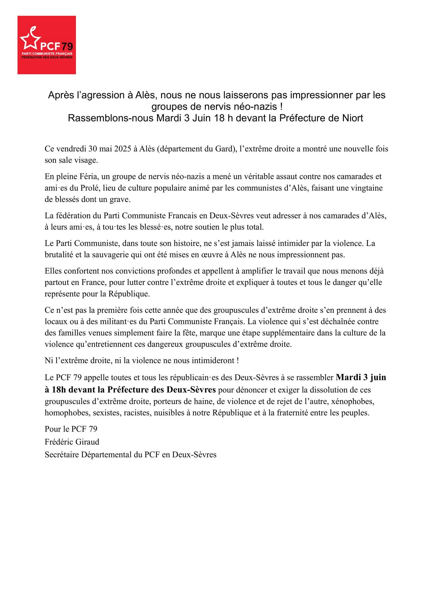

Appel archivé
À Niort le 3 juin, rassemblement contre les violences d’extrême droite
Date indiquée par Facebook · 2 juin 2025
Repères éditoriaux
Nous avons appelé à nous retrouver le mardi 3 juin à 18 h devant la préfecture, à Niort, après l’agression à Alès. Le communiqué et l’affiche exposent les revendications de ce rassemblement.
Texte conservé avec la publication
Rassemblement devant la préfecture des Deux-Sèvres à Niort
MARDI 3 JUIN à 18 heures
pour dénoncer et exiger la dissolution de ces groupuscules d’extrême droite, porteurs de haine, de violence et de rejet de l’autre.

Sources
Archive rouge · export Facebook · AR-0002-FB-01107
À lire aussi · Condamnation de dirigeants du RN : réaction du PCF · Le lien d’origine